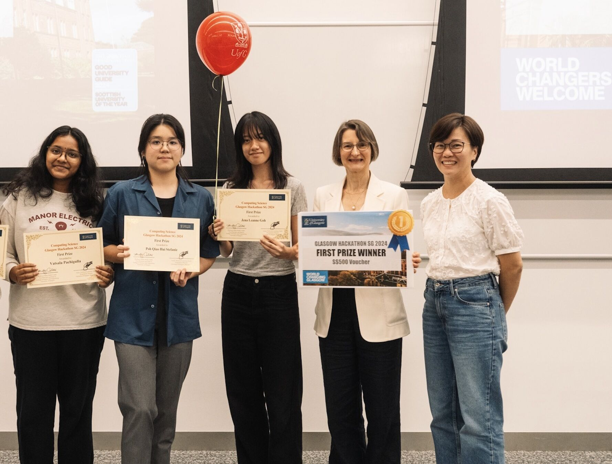
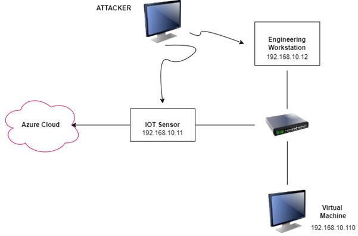
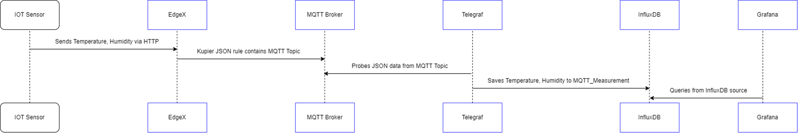
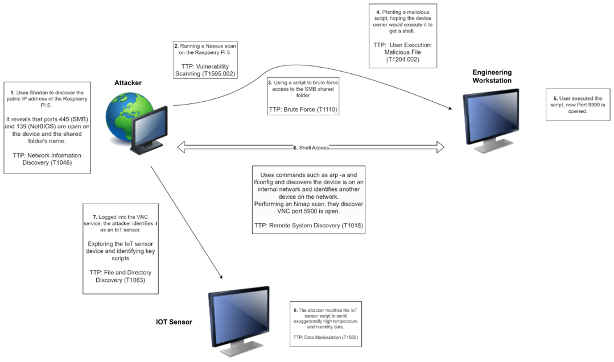

Fine-tuned Mistral model for text generation: Creating contextually rich and relevant survey
questions.
BERT for text classification: This enabled precise categorization of responses, enhancing
data analysis.
ChromaDB vector database: Provided robust data management and retrieval capabilities.
Dynamic Question Generation: Our AI dynamically crafted questions based on prior responses,
ensuring continuous engagement and comprehensive data collection.
Enhanced User Retention: The platform's interactive and customized questions significantly
increased participant engagement and retention.
This solution empowered P&G's consumer research team to extract critical insights while maintaining
high levels of participant engagement.
I helped mostly with fine-tuning the Mistral model,
dynamic question generation and enhancing user retention..
University of Glasgow (SG) Hackathon 2024, 1st Place

Sea-It Grow: Pocket AI for Seagrass Planting and Research.
Tool that aids in this local planting and research.
Utilising Data and AI, this tool allows both researchers and volunteers to predict if the
area is suitable for seagrass growth, survival rates and effective ways to plant it.
Collect data (IOT), Predict, Monitor. A pocket seagrass researcher on the go.
I prototyped an ARIMA model to forecast future seagrass growth and
survival rates, based on environmental data trends + ChatGPT to summarise, and explain the results.
There was so much to learn from the two lecturers who judged our solution, and we are so grateful!
It was the kind of feedback we really needed.
FYP: Implementation of an IoT HoneyPot Environment



Building an IoT Honeypot with Edge and Network Analytics
Designed and deployed a IoT honeypot environment with EdgeX as the IoT gateway and
NetWitness Platform for analytics.
Configured IoT devices and IT infrastructure to support a realistic honeypot setup.
Developed log parsing and correlation rules specific to IoT attacks
Implemented SNORT IDS for network intrusion detection and used NetWitness Investigator
for
detailed analysis.
I was the group leader for my final year project. I took charge of
the
EdgeX setup, IoT sensor & Azure Cloud communication. I developed a custom correlation rule on
the
RSA NetWitness platform to detect my attack sequence. Recognising that certain commands and
movements were not captured by NetWitnese alone, I created additional rules using SNORT and
NetWitness Investigator to get more comprehensive coverage.
Through this experience, I gained valuable insights into real-world
security challenges, like the importance of centralized log management. In an actual deployment, integrating multiple data log sources helps to provide a holistic security overview.